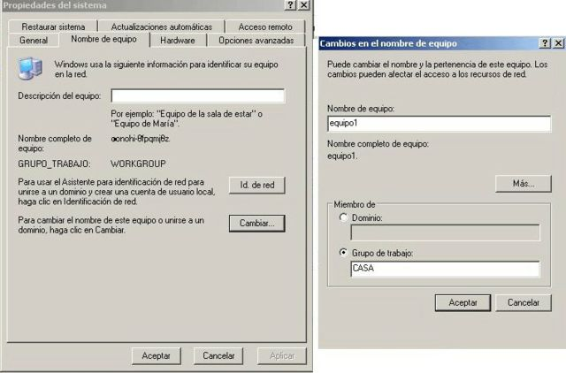
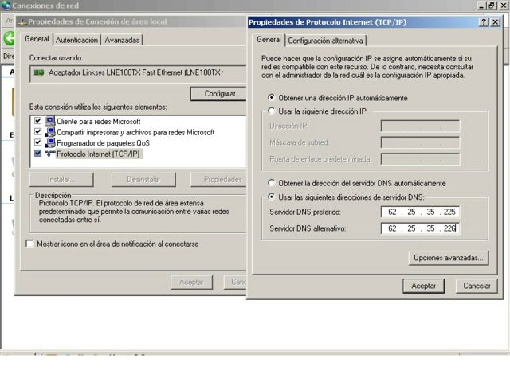

MONTAR TU RED EN CASA
Para montar una red lo que necesitas son varios ordenadores, si tienes dos ordenadores pues es con un cable de red cruzado, si tienes un router pues es de ordenador a router un cable y del otro ordenador al router otro cable y del router a tu línea de teléfono.-
Asumimos que se ha instalado en cada computadora una tarjeta de red que está funcionando y con los controladores (drivers) adecuados. Las tarjetas se asumen con la conexión TP - RJ45, parecido a un enchufe telefónico con 8 conectores en vez de 4. También se deberá contar con un cable de red cruzado, o también llamado crosslink. Este tipo de cable se utiliza para la conexión en cascada de concentradores (hubs) o switches y debería encontrarlo sin problema con cualquier proveedor de componentes de red. También puede solicitar que lo fabriquen para usted a muy bajo costo, dependiendo de la longitud. Normalmente se encuentra de 1 a 3 m.
OBJETIVO
Establecer la conexión en red de dos computadoras. Parametrizar la red para compartir archivos de un ordenador a otro.-
PARAMETROS BASICOS
Los protocolos que mencionamos en entregas anteriores serán parametrizados para lograr establecer la comunicación entre los ordenadores. Sin embargo Windows añade algunos elementos de complejidad cuyo resultado final es una segmentación de la red. Estos segmentos se llaman en la terminología de Windows "Grupos de Trabajo".
Confío en que tengas los drivers de la tarjeta grafica y todo bien configurado.
Para configurarlas tienes que poner el mismo nombre de grupo a todos los ordenadores esto se hace en inicio, luego a mi PC con el botón derecho del ratón le das a propiedades y en la pestaña de nombre del equipo pinchas en el botón de cambiar... y en la otra pantalla pones el nombre del equipo y el nombre del grupo de trabajo, según te viene en la imagen de abajo. Esto lo haces en todos los ordenadores teniendo en cuenta que el grupo de trabajo será el mismo para todos y el nombre del equipo cada ordenador tendrá el suyo propio.

Bueno ahora vamos con el protocolo tienes que ir a panel de control y luego a conexiones, veras el icono de conexiones de área de red, dale con el botón derecho a propiedades y pincha en la pestaña de general y señala donde pone Protocolo TCP/IP y dale a propiedades, se puede hacer de dos maneras una la mas sencilla ponerla como pone en el dibujo, obtener IP automáticamente y otra es poner IPS que tu te inventes que empiecen por 192.x.x.x 162.x.x.x 10.x.x.x poner tu la mascara de subred, suele ser 255.255.255.0 o 255.255.0.0 depende de la clase de IP que tengas si es tipo A, B, C (Pero esto es muy largo de explicar y paso), que no te compliques y ponla como en el dibujo, le das aceptar y quizás te pida reiniciar el equipo.
Las dns te las da tu proveedor de Internet, ponlas en todos los ordenadores.

Si tienes el XP antes de aceptar en esta pantalla dale a opciones avanzadas y asegurate que este demarcado lo de proteger este equipo....
Si no tienes el XP esta pantalla esta en el icono de entorno de red que esta en tu escritorio con el botón derecho de propiedades, o vete a inicio panel de control y luego a red o entorno de red o mis sitios de red.
Pero el procedimiento es el mismo.
Para finalizar asegurate que tienes compartidos los archivos que quieras que se vean de un PC a otro.
Si quieres imprimir por la impresora es compartiendo impresora.
Andaluzsoy